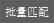
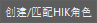
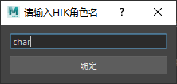
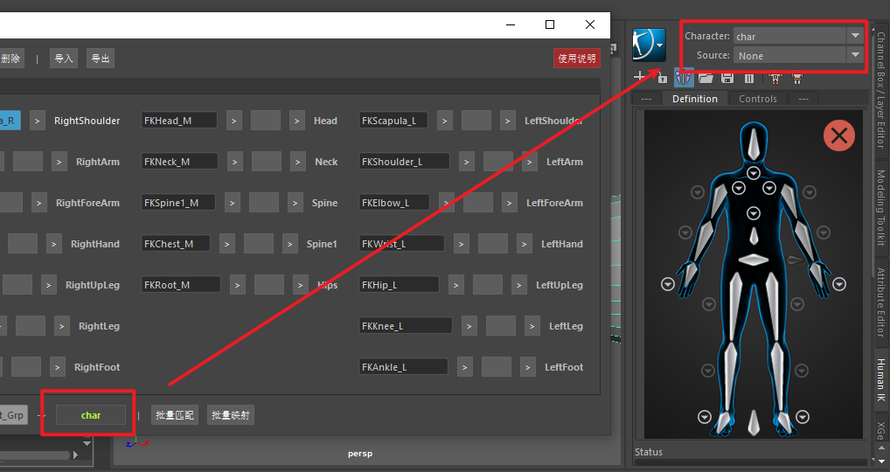
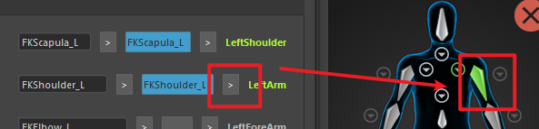
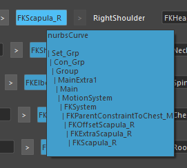
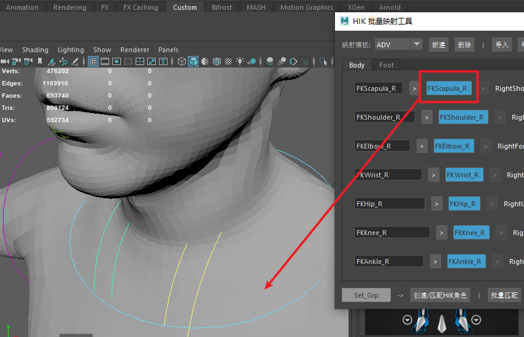

简介

映射模板切换
映射模板新建
映射模板删除
映射模板导入，文件名为模板名，格式 .HIKM
映射模板导出，文件名为模板名，格式 .HIKM
HumanIK 身体各部分结构分类标签
Maya节点模糊搜索关键字栏
模糊搜索按钮
Maya 节点展示按钮，显示搜索到的节点。鼠标停留显示节点类型以及所有父级结构，点击选中节点，并当前视图中导航的此节点
将当前节点映射到HumanIK对应结构按钮
HumanIK 对应的部分名称
选中maya一个组，点击获取此组下所有节点
输入名字创建一个 HumanIK 角色， 当角色存在时，选中这个角色
批量搜索
批量映射
打开此使用说明
教程
查找骨骼和控制器
 工具在启动后，首先选中一个Maya大纲中的一个组,点击左下角的
工具在启动后，首先选中一个Maya大纲中的一个组,点击左下角的 ，工具将获取此层级下所有节点，以备后续节点搜索功能使用。
，工具将获取此层级下所有节点，以备后续节点搜索功能使用。

当节点获取成功时，按钮名将显示组名，并且工具所有匹配功能控件变为启用状态。

匹配功能启用后，第一栏输入需要查找的骨骼或者控制器关键字，点击右侧 即可模糊查找节点，右侧按钮将显示与关键词最匹配的节点名。
即可模糊查找节点，右侧按钮将显示与关键词最匹配的节点名。
点击可以执行批量查找。
映射 HumanIK
在执行映射功能前，先创建HumanIK角色
点击

输入角色名，点击确定或者回车键

创建成功后，HumanIK界面将自动索引到当前角色。
如果输入角色名已存在，工具将直接所以到当前角色，不再另行创建。

工具执行查找并找到对应节点后，点击 按钮执行节点与骨骼的映射，可以从HumanIK图示中查看映射状态。
点击 可以执行批量映射功能
模板的创建删除与导入导出
本工具支持多套控制器命名和HumanIK角色映射

点击新建模板输入模板名称

创建成功后下拉菜单选择不同的映射模板
本工具也支持模板的导入导出

点击导入按钮，可以将导出的 HIKM 文件导入映射表

点击导出按钮可以将当前映射信息导出
节点的操作

当查到节点，鼠标在节点上短暂停留，会显示这个节点的节点类型，以及节点所在层级

点击节点按钮，此节点会在Maya中选中，maya视图也将导航到节点所在位置
工具使用不同颜色区分不同的节点类型
蓝色 曲线控制器
紫色 Maya骨骼
 灰色 其它类型节点
灰色 其它类型节点